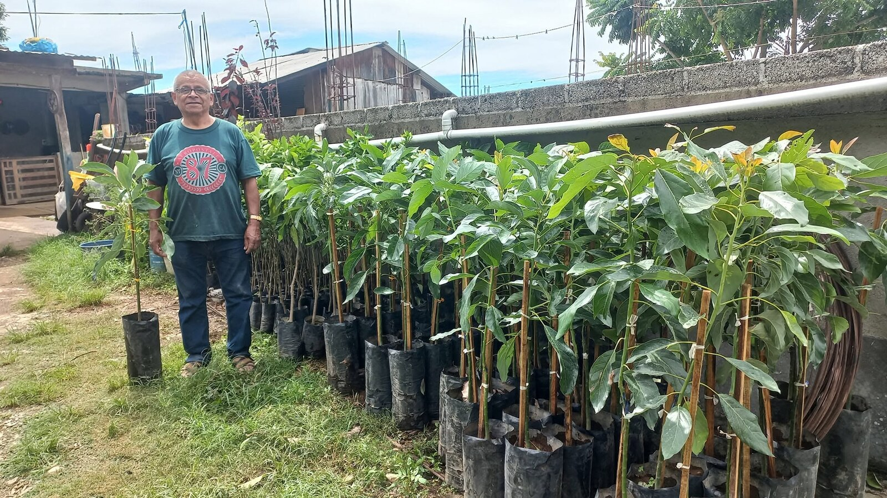
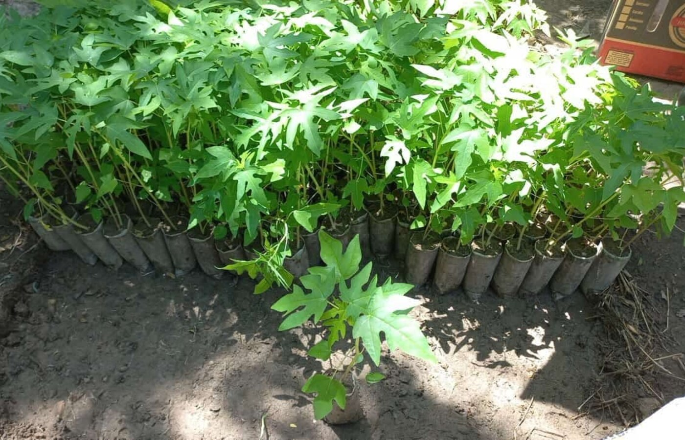
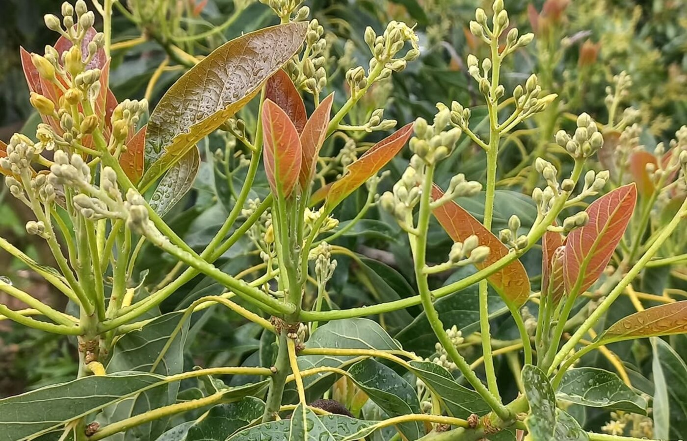

Productividad agrícola con visión sostenible.
En INGESA desarrollamos soluciones agrícolas para agricultores y empresas agroindustriales que buscan optimizar recursos, elevar su producción y adoptar prácticas responsables con el campo.
La tierra responde mejor cuando la tecnología, la experiencia y el cuidado trabajan juntos.
Acompañamos proyectos agrícolas con una mirada integral: selección de cultivos, plántulas, asesoría y soluciones pensadas para producir más con recursos mejor aprovechados.
Proyectos Productivos
Soluciones para frutales y hortalizas con enfoque técnico, planeación clara y orientación a resultados medibles en campo.
Agricultura Responsable
Impulsamos prácticas sostenibles que cuidan el suelo, el agua y el entorno donde se desarrolla cada cultivo.
Optimización de Recursos
Ayudamos a tomar mejores decisiones para elevar productividad, reducir desperdicios y aprovechar cada etapa del ciclo agrícola.
Servicio Integral
Atención cercana para agricultores y empresas agroindustriales, desde la asesoría inicial hasta el seguimiento del proyecto.
Cada cultivo exige
una estrategia propia
Integramos conocimiento técnico y experiencia local para proyectos de frutales, hortalizas e invernaderos.



Del diagnóstico al campo, con método
Convertimos la necesidad del productor en una ruta clara para elegir, establecer y mejorar proyectos agrícolas.
Diagnóstico & Asesoría
Analizamos el cultivo, ubicación, recursos disponibles y objetivo productivo para recomendar la solución adecuada.
Propuesta a Medida
Definimos frutales, hortalizas, plántulas o acciones técnicas según las condiciones reales del proyecto.
Implementación & Seguimiento
Acompañamos el avance con orientación práctica para sostener productividad y buenas prácticas agrícolas.
Proyectos de frutales y
hortalizas para invernaderos
INGESA trabaja con una oferta enfocada en cultivos de alto valor y plántulas para productores que buscan establecer proyectos con bases técnicas sólidas.
-
Frutales principales
Aguacate Hass, durazno, limón, naranja, manzanas, mango petacón y ataúlfo, peras y café Sarchimor.
-
Hortalizas para invernadero
Plántulas de jitomate, cebolla y chile para proyectos productivos bajo condiciones controladas.
-
Uso eficiente de recursos
Soluciones pensadas para optimizar agua, suelo, manejo y decisiones de producción.
-
Compromiso sostenible
Prácticas agrícolas responsables que buscan productividad sin perder de vista el bienestar del medio ambiente.
disponibles
para invernadero
servicio
directa
Soluciones para productores y agroindustria
Atendemos necesidades agrícolas reales con enfoque técnico, práctico y sostenible.
Agricultores
Viveros
Invernaderos
Agroindustria
Proyectos regionales
Hablemos de tu proyecto agrícola
Cuéntanos qué cultivo o plántula necesitas y recibe orientación directa de INGESA.
Atención Personalizada
Ingeniería en Soluciones Agrícolas para productores de Oaxaca, Puebla y zonas cercanas.
-
Ubicación
Calle Manuel Doblado #8,
Col. Centro, 68600
San Juan Bautista Cuicatlán, Oaxaca. -
Área de servicio
Teotitlán de Flores Magón, Zoquitlán, San Juan Bautista Cuicatlán, Coxcatlán y Ajalpan.
-
Celular
-
Correo electrónico